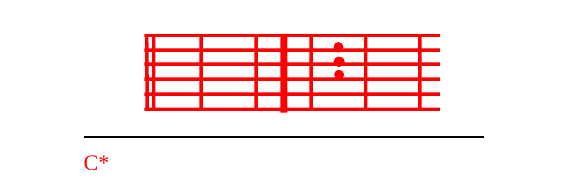

M.D-Peke yako kwa peke C*yake, chini ya msalaAba
Maria, nani ataweza kukuteD-nga?
Bikira peke C*yako, AMama
Mnara uliopD-enyezwa
Nguzo ya upeC*ndo
Wewe unategemeza Ambingu ya imani D-yetu haba
K.PD-eke yako kwa peke C*yake
Mama uliyejaFa Mungu
Utuombee Asisi
BbTulio wakoAsefu
